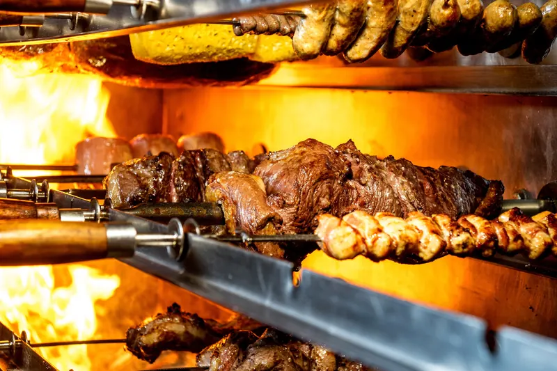
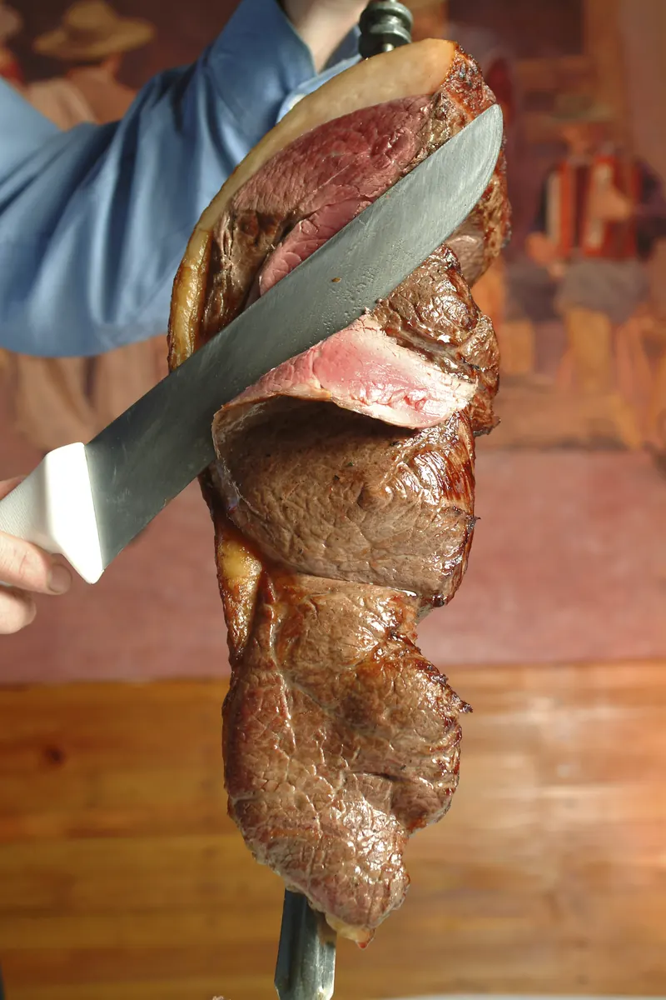

Cardápio
Dois jeitos de comer.

O rodízio
Um preço fixo. Os garçons trazem as carnes na brasa até a sua mesa durante toda a refeição, até você sinalizar que está satisfeito. Acompanhamentos brasileiros, salad bar e buffet quente estão incluídos.
Consulte o valor atual do rodízio ao reservar ou ligar.

- 01PicanhaA parte nobre da alcatra
- 02Costela de vacaCostela bovina
- 03Alcatra com baconAlcatra envolta em bacon
- 04Alcatra no alhoAlcatra com alho
- 05Alcatra com queijoAlcatra com queijo
- 06AlcatraAlcatra
- 07Costela de porcoCostelinha suína
- 08LomboLombo suíno
- 09MaminhaMaminha
- 10FrangoCoxa de frango e peito envolto em bacon
- 11FraldinhaFraldinha
- 12LinguiçaLinguiça de porco
- 13CordeiroCordeiro
- 14Maçã de peitoPeito bovino
- 15Coração de frangoCoração de frango
À la carte
Toque no + do que quiser. A lista fica na tela enquanto você liga, e o pedido para viagem vira uma ligação rápida.
Nada encontrado. Tente outra palavra.
AperitivosAppetizers
- Torresmo de rolo Casa NovaFried Pork Casa NovaTorresmo de rolo com abacaxi embriagado
- Picadinho à Casa NovaCarne, frango, camarão e linguiça salteados com pimentão, cebola, tomate e vinagre balsâmico
- Amêijoas à Bulhão PatoClams à Bulhão PatoAmêijoas no azeite, limão, vinho branco, alho, tomate e coentro
- SalgadinhosBrazilian PastriesSalgadinhos típicos brasileiros
- Amêijoas CasinoClams CasinoAmêijoas recheadas com carne de caranguejo e camarão
- Frango a passarinho com mandiocaFried Chicken with Yucca
- Picanha no palitoSirloin Strips
- Coração de galinhaChicken Hearts
- Queijo à milanesaBreaded Cheese
- Asinha de frangoBuffalo WingsTradicional, apimentada ou com molho barbecue
- Coquetel de camarãoShrimp Cocktail
- Torresmo com mandiocaFried Pork Skin with Yucca
- Camarão ao alho e óleoGarlic Shrimp
- Mandioca frita com linguiçaFried Yucca with Sausage
- Iscas de peixeFish StripsCom molho tártaro
- Linguiça calabresaBrazilian Sausage
- Polvo ao vinagreteOctopus in Vinaigrette
- Picadinho de churrascoBarbecue Strips
- Bolinho de bacalhauCod Fish Fritters
- Anéis de lula fritosFried Calamari
- Queijo brancoWhite CheeseCom tomate, orégano e azeite
Pratos típicosBrazilian Classics
- Tutu à mineiraTutu à MineiraBisteca grelhada com tutu de feijão, ovo cozido, linguiça, couve e arroz
- Feijão tropeiroFeijão TropeiroBisteca grelhada com feijão, ovo frito e couve na farinha, arroz à parte
- Feijoada brasileiraFeijoada BrasileiraFeijão preto com carnes de porco
Espetos na mesaSkewers to the Table
Servidos com arroz, feijão e batata frita
- Espeto de picanhaPicanha SkewerPicanha no espeto, assada para você e servida na mesa, como no rodízio
- Espeto mistoMixed SkewerChurrasco misto assado para você e servido na mesa, como no rodízio
CarnesSteaks
Com arroz, feijão e um acompanhamento à escolha
- T-bone grelhadoGrilled T-Bone Steak
- Filé mignon ao marsalaFilet Mignon MarsalaFilé mignon ao molho de vinho marsala com alho e cogumelos
- Filé mignon grelhadoGrilled Filet Mignon
- Costeletas de cordeiro grelhadasGrilled Lamb Chops5 unidades
- Bisteca grelhadaGrilled Pork Chops
- Fraldinha grelhadaGrilled Skirt Steak
- Bitoque à portuguesaPortuguese SteakBife ao molho de alho com presunto e ovo
- Bife aceboladoOnion Steak
- Bife a cavaloSteak Brazilian StyleCom ovo frito por cima
- Bife de picanhaGrilled Sirloin Steak
FrangoChicken
- Strogonoff de frangoChicken StroganoffMolho cremoso de tomate e cogumelos, com arroz e batata palha
- Frango ao marsalaChicken MarsalaPeito de frango ao vinho marsala com cogumelos
- Frango canadenseCanadian ChickenPeito de frango ao creme de milho com bacon e batata palha
- Frango à parmegianaChicken ParmPeito empanado com molho de tomate, muçarela e presunto
- Bobó de frangoBobó de FrangoFrango no leite de coco, dendê e farinha de mandioca, com arroz
- Risoto de frangoChicken RisottoArroz cozido no caldo com legumes e frango
- Frango cordon bleuChicken Cordon BleuRecheado com queijo e presunto, molho de cogumelos e batatas
- Peito de frango grelhadoGrilled Chicken Breast
MassasPasta
- Fettuccine AlfredoCom camarão ou frango
- Ravioli de queijoCheese RavioliCom molho marinara
- Penne à vodkaPenne alla VodkaCom camarão ou frango
- Espaguete ao sugo com frangoSpaghetti Marinara with Chicken
- Espaguete à carbonaraSpaghetti CarbonaraMolho cremoso com presunto cru, cebola, frango e bacon
- Lasanha vegetarianaVegetarian Lasagna
Frutos do marSeafood
- Lagosta recheadaStuffed LobsterLagosta recheada com camarão, caranguejo e vieiras
- MariscadaLagosta, camarão, vieiras, amêijoas e mexilhões em molho vermelho leve com alho e salsa
- Paella catalãPaella CatalãLagosta, amêijoas, mexilhões, vieiras, camarão e frango no arroz com açafrão
- Salmão grelhadoGrilled SalmonCom legumes e arroz
- Moqueca de peixeMoqueca de PeixePeixe com pimentão, tomate, cebola, leite de coco e dendê, com arroz
- Polvo à lagareiroGrilled OctopusNo alho e azeite, com batatas, pimentão e cebola
- Robalo grelhadoGrilled Sea BassFilé ao molho de manteiga, com batatas e legumes
- Tilápia ao molho de camarãoTilapia in Shrimp SauceCom legumes
- Bacalhau cozido à brasileiraCod Fish Brazilian StyleCom pimentão, cebola e batatas ao molho de tomate, arroz à parte
- Bobó de camarãoShrimp Casa Nova StyleCamarão no leite de coco, dendê e farinha de mandioca, com arroz
- Bacalhau grelhadoGrilled Cod FishCom pimentão, cebola, batatas e arroz
- Camarões OléCamarões jumbo ao vinho branco, alho e limão, com arroz e um acompanhamento
Pratos feitosDaily Platters (PF)
Arroz, feijão e um terceiro acompanhamento: batata frita, mandioca frita ou banana
- PF bife à milanesaBreaded Steak
- PF bife aceboladoBeef Steak with Onions
- PF bife de porco aceboladoPork Steak with Onions
- PF fígado aceboladoLiver with Onions
- PF frango a passarinhoFried Chicken Pieces
- PF filé de peixe à milanesaBreaded Fish Fillet
- PF mineiroMineiro Platter
- PF de picanhaPicanha Platter
- PF de costelaBeef Ribs Platter
- PF de peito de frangoChicken Breast Platter
- PF de churrascoBarbecue PlatterFrango, porco, linguiça e carne
- PF de lombo assadoRoast Pork Loin Platter
InfantilKids
- Nuggets de frangoChicken Nuggets
- Macarrão com queijoMac 'n' Cheese
- Tirinhas de frangoChicken Fingers
- Penne Alfredo
Cardápio conforme publicado no site atual do restaurante. Os preços são informados por telefone. Avise o garçom sobre alergias.